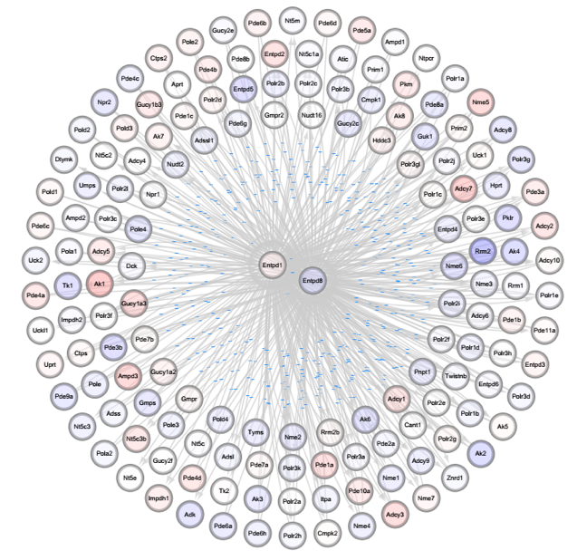

5. 差异基因功能及网络分析
5.1 差异基因的GO富集分析
GO（Gene ontology）是国际通用的基因功能分类体系，按照基因的细胞成分（cellular component），分子功能（molecule function）以及生物过程（biological process）分为3类。在我们拿到了差异基因的集合以后，进行GO富集能够看到不同样本在这三大类中的基因分布情况，也可以用于对目标功能的基因的聚集。通过计算数据集的超几何分布，得出基因富集对应GO terms的排序。
差异表达基因GO富集分析结果展示（上调／下调基因）：
表5 差异基因的GO富集示意图表
| Up-regulated Genes Gene Ontology Analysis | ||||||
|---|---|---|---|---|---|---|
| GOBPID | Pvalue | OddsRatio | ExpCount | Count | Size | Term |
| GO:0010975 | 9.87E-09 | 49.56483516 | 0.098693503 | 4 | 62 | regulation of neuron projection development |
| GO:0072001 | 1.66E-08 | 826.7317073 | 0.007591808 | 2 | 48 | renal system development |
| GO:0030900 | 1.67E-08 | 5.693782383 | 2.469868173 | 11 | 57 | forebrain development |
| GO:0001822 | 2.22E-08 | 16.63632766 | 0.349223164 | 5 | 46 | kidney development |
| GO:0001655 | 4.15E-08 | 9.481650071 | 0.736405367 | 6 | 51 | urogenital system development |
| Down-regulated Genes Gene Ontology Analysis | ||||||
|---|---|---|---|---|---|---|
| GOBPID | Pvalue | OddsRatio | ExpCount | Count | Size | Term |
| GO:0008544 | 1.36E-13 | 6.491166078 | 2.037429379 | 11 | 85 | epidermis development |
| GO:0043588 | 3.39E-11 | 6.228924847 | 2.118644068 | 11 | 74 | skin development |
| GO:0060337 | 6.89E-10 | 6.131799877 | 2.150423729 | 11 | 26 | type I interferon signaling pathway |
| GO:0071357 | 6.89E-10 | 4.864259523 | 3.262711864 | 13 | 26 | cellular response to type I interferon |
| GO:0034340 | 2.22E-09 | 3.783207038 | 5.71680791 | 17 | 26 | response to type I interferon |
注：
1) GOBPID: gene ontology biological process ID；GO数据库中生物学过程分类编号信息；
2) Pvalue: 富集分析显著性统计参数；
3) Count: 差异表达基因中隶属于该生物学过程的基因个数统计；
4) Size：该生物学过程所包含的所有基因个数统计；
5) Term：生物学过程名称；
6) Gene Ontology分析选用数据库GO生物过程（biological process）；
7) GO富集分析按照显著性统计参数pvalue排序；
8) GO富集分析显著性筛选阀值：cutoff: pvalue < 0.05；
9) 上、下调差异基因GO富集分析分别选择top20 biological process做结果展示，完整列表见附件“/结果文件/phase3-GO_KEGG/up/genes_up_go.xls; /结果文件/ phase3-GO_KEGG/down/ genes_down_go.xls ”。
图4.1 差异基因的GO富集示意图
注： 选取结果中top10富集进行绘图展示。
5.2 差异基因的KEGG富集分析
随着科学研究的发展，科学家们发现不同的基因间存在着相互作用关系。这些基因相互协调，发挥其生物学功能，展现出生物学现象。针对这一现象，科学家们分门别类的制定出各种pathway。较为著名的有KEGG（Kyoto Encyclopedia of Genes and Genomes）数据库。利用pathway显著性富集，确定差异基因所属的pathway，进而找出可能相互作用的基因，挖掘现象背后的机制。
差异表达基因KEGG pathway富集分析结果展示（上调／下调基因）：
表6 差异基因的KEGG富集示意图表
| Up-regulated Genes KEGG Pathway Analysis | ||||||
|---|---|---|---|---|---|---|
| GOBPID | Pvalue | OddsRatio | ExpCount | Count | Size | Term |
| hsa04540 | 1.1E-05 | 10.5046208 | 5.659773585 | 35 | 20 | Gap junction |
| hsa05200 | 7.26E-05 | 5.369824806 | 13.16226415 | 51 | 53 | Pathways in cancer |
| hsa00982 | 0.00029073 | 3.021918626 | 21.32286792 | 53 | 15 | Drug metabolism - cytochrome P450 |
| hsa04510 | 0.000398643 | 6.210961919 | 5.133283019 | 23 | 30 | Focal adhesion |
| hsa04974 | 0.000569771 | 4.453982344 | 8.621283019 | 30 | 17 | Protein digestion and absorption |
| Down-regulated Genes KEGG Pathway Analysis | ||||||
|---|---|---|---|---|---|---|
| GOBPID | Pvalue | OddsRatio | ExpCount | Count | Size | Term |
| hsa04514 | 1.56E-06 | 4.88481203 | 12.60316981 | 36 | 31 | Cell adhesion molecules (CAMs) |
| hsa04360 | 4.82E-06 | 21.76313148 | 0.632301887 | 10 | 34 | Axon guidance |
| hsa05165 | 8.67E-05 | 50.32307692 | 0.19290566 | 6 | 48 | Human papillomavirus infection |
| hsa04940 | 0.000196515 | 13.78965297 | 0.932377358 | 10 | 12 | Type I diabetes mellitus |
| hsa05332 | 0.000524794 | 13.84582543 | 0.825207547 | 9 | 11 | Graft-versus-host disease |
注：
(1) KEGGID: KEGG pathway ID；KEGG数据库中生物学通路编号信息；
(2) Pvalue: 富集分析显著性统计参数；
(3) Count: 差异表达基因中隶属于该生物学通路的基因个数统计；
(4) Size：该生物学通路所包含的所有基因个数统计；
(5) Term：生物学通路名称；
(6) KEGG pathway富集分析按照显著性统计参数pvalue排序；
(7) KEGG pathway富集分析显著性筛选阀值：cutoff: pvalue < 0.05；
(8) 上、下调差异基因KEGG pathway富集分析分别选择top20 biological process做结果展示，完整列表见附件“/结果文件/phase3-GO_KEGG/up/genes_up_kegg.xls; /结果文件/phase3-GO_KEGG/down/genes_down_kegg.xls”。
图4.2 差异基因的KEGG富集示意图
注： 选取结果中top10富集进行绘图展示。
差异表达基因在KEGG pathway中具体通路信息展示：
以表达上调基因KEGG pathway富集分析结果为例，其中表达下调基因AMPK,ACC,GK,G6PC,PP1等蛋白因子显著富集在生物学通路“INSULIN SIGNALING PATHWAY”中，并以绿色字体标出。所有显著富集的通路信息见附件“／结果文件／phase3-GO_KEGG”。
图4.3 KEGG pathway 富集分析结果展示示意图
5.3 差异基因的GSEA富集分析
GSEA软件是由broad institute开发的用于分析差异表达基因所富集的通路和GO term的软件。用该软件分析差异表达基因的特征被 国际上许多顶尖实验室所采用。GSEA软件的分析是基于广泛的数据库的，其中较为著名的有Gene Ontology 数据库和KEGG数据库。
该分析的好处是，可以一次性的扫描所有GO term以及pathway，并直观的了解每一个pathway或者GO term中所有基因的差异表达情况，且该方法不依赖于差异表达的p-value cutoff。如上三点好处，让GSEA 备受推崇。

图4.4 GSEA分析核心图(举例)
注：
(1) 文件在数据汇总的GESA文件夹中index.html文件，以上图为例，说明GSEA的核心分析图；
(2) 我们根据基因的差异表达情况，对基因组中的所有基因进行排序，其中上调的基因依次排在最前面（显示为图中中间颜色符红色的部分），下调的基因依次排在最后面（显示为图中中间颜色符蓝色的部分），差异表达不明显的基因排在中间（显示为图中中间颜色符红蓝交界的部分）；
(3) 颜色符上面的黑色竖线（bar）代表此图中的基因在排序队列中的位置。若图中大部分黑色竖线对应（hit）于红色的颜色符区域，表明在此图示状态下的大部分基因是上调的。若图中大部分黑色竖线对应（hit）于蓝色的颜色符区域，表明在此图示状态下的大部分基因是下调的；
(4) 图中最上面的绿色曲线，与黑色竖线的富集区域相对应。其峰值出现的区域 即为黑色竖线（bar）集中出现的区域；
完整信息见附件“/结果文件/phase4-GSEA/”
5.3 差异基因中核心基因Signal-Net分析
Signal-Net整合所有KEGG通路中基因和基因之间的调控关系，构建基因与基因间的调控网络图。通过Singal-Net，可以获得网络中具有核心调控地位的基因，重要的桥梁基因（eg.连接主网络图的基因）以及核心基因的上下游基因和它们之间的相互关系。
图4.5 Signal-Net分析核心基因图(部分截图)
注：
(1) 文件在数据汇总的Signal-Net文件夹中,以上图为例，图中的节点为基因，红色代表上调，蓝色代表下调。红色越深，代表上调程度越高；蓝色越深，代表下调程度越高；
(2) 各个基因间的连线代表实验验证的来自KEGG数据库的调控关系，可以将图放大后即可清楚看到；
(3) 差异表达显著且连接的边众多的节点即为核心基因；核心基因互相连接的即为重要的桥梁基因；
原始文档见附件“/结果文件／phase5-SignalNet/”。